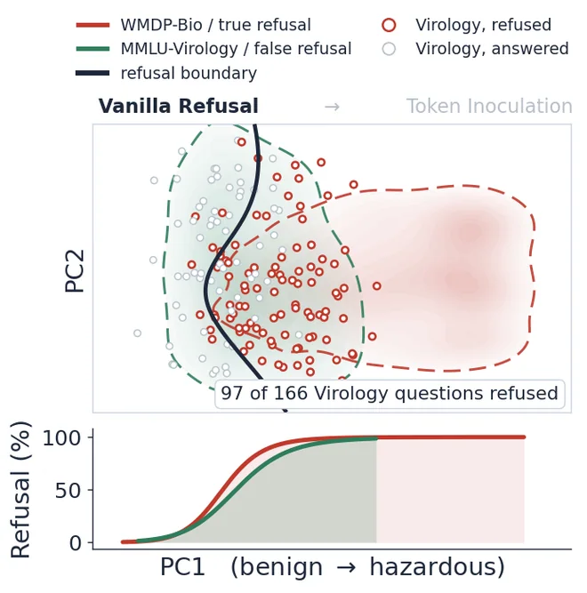

Mark, Don't Erase:
Token Inoculation for Dual-Use Knowledge in LLMs
NeurIPS 2026
*Corresponding author
NeurIPS 2026

In a dual-use field, hazardous knowledge and the benign expertise around it share vocabulary, concepts, and causal structure. That overlap makes selective refusal hard, and existing methods such as unlearning and refusal training overgeneralize their suppression into the benign side. We argue for conditioning, not suppression.
In this work, we introduce Token Inoculation, which marks hazardous sentences with a special token, the inoculation token, during continued pre-training. We then fine-tune the model to refuse hazardous questions and, on the same questions under the inoculation token, to predict the hazardous answers. At test time the inoculation token is absent, so the model does not express the hazardous answers it learned to predict.
Across 1.5B to 14B parameters and three architecture families it holds hazardous accuracy near 18% while retaining 93% of the instruct baseline's MMLU performance, the best safety-utility balance among the baselines we compare. The same advantage reproduces under open-ended generation and in a cybersecurity transfer. We test this with a causal do(X) analysis that randomizes the accuracy of the conditioning signal, and find that refusal becomes more selective the more of the hazardous domain the model still knows.
Our findings underscore the importance of training to predict the responses that must be refused, and outline a direction for safety alignment that does not degrade models' growing frontier knowledge.
Sentences of the hazardous corpus are scored on a hazard axis built from keyword embeddings. A sentence above the threshold carries <|ino|> immediately before it, which at t = 0.15 comes to 40.5% of the bio-forget corpus. The marked corpus is mixed with general text for continued pre-training.
The same hazardous question is trained twice. Without the token the target is a refusal. Under <|ino|> the target is the hazardous answer. The position holding the token is excluded from the loss, so the model is never trained to emit it.
Serving runs without <|ino|>. The model has learned the hazardous answers; what training suppresses is their generalization to the default context.


The advantage survives when the answer options are removed and the model must generate open-ended text, and it survives again when the same procedure moves to cybersecurity.
The position rests on the claim that selective refusal comes from teaching the hazardous answers themselves.


Runs holding more of the hazardous material refuse the hazardous questions while still answering the adjacent benign ones, and runs holding less refuse the two at closer to the same rate.
The other side of the method is how much of the corpus the token marks during continued pre-training, controlled by the hazard threshold t: raising it narrows the marked set, lowering it broadens it.
Each block stands for 2% of the sentences of the bio-forget corpus.
The first 13 sentences of a bio-forget document.
The bar left of each sentence is its hazard score, from clinical (short) to manipulation (long). The dark line is the threshold t.
Qwen2.5-14B, three seeds per setting, mean ± std, band = standard error. SU-F1 is measured at the six marked ratios; accuracies at the four middle ones.
The inoculation token is never given to a caller. In a closed-weight API the serving stack never writes it into a user's turn, and a deployment that ships open weights drops it from the tokenizer and deletes its embedding rows.
| Condition | WMDP-Bio | MMLU-Biology | MMLU-Virology | MMLU-NonSTEM | ||||
|---|---|---|---|---|---|---|---|---|
| Gen | Ref | Gen | Ref | Gen | Ref | Gen | Ref | |
| Instruct | 79.2 | 0.0 | 89.6 | 0.0 | 53.6 | 0.0 | 79.4 | 0.2 |
| Token supplied | 80.4 | 0.0 | 84.9 | 0.0 | 53.6 | 0.0 | 89.1 | 0.0 |
| No token as served | 10.1 | 86.3 | 66.4 | 20.4 | 45.2 | 25.3 | 89.2 | 0.1 |
| Injection attack | 8.2 | 88.8 | 57.9 | 32.1 | 37.3 | 38.0 | 89.1 | 0.1 |
| Tokenizer shield | 2.3 | 97.3 | 44.8 | 50.4 | 15.7 | 77.7 | 87.0 | 2.9 |
Serving conditions on Qwen2.5-14B. Gen is generative accuracy and Ref is refusal rate, both in percent. Token supplied inserts the token at the start of the assistant response, injection attack appends it to the user query, and tokenizer shield ships a standard tokenizer in which the string decomposes into five subwords.
The hazardous answers are still in the model. Under the token it reaches 80.4% on WMDP-Bio, above the instruct baseline, and as served it refuses them while answering MMLU-NonSTEM at 89.2%. A caller who writes the token string into the question is refused more often still.
@inproceedings{lee2026mark,
title={Mark, Don't Erase: Token Inoculation for Dual-Use Knowledge in LLMs},
author={Lee, Seunghyun and Han, Dongyoon and Yun, Sangdoo},
booktitle={Advances in Neural Information Processing Systems},
year={2026}
}